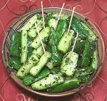

|
Cucumbers, MarinatedRussia - Smedomi | ||||
| Makes: Effort: Sched: DoAhead: |
1-1/4 # ** 4 hrs Must |
This is a very popular zakuska (appetizer) in Russia, served by the piece rather than as a salad. This is a "quick" version - for a "do ahead" (2 weeks) version see our recipe Salted Cucumbers. | |||
|
1-1/2 ------- 2 1/4 3 3 1/2 1/2 ------- |
# --- cl c T T t t --- |
Cucumbers (1) -- Marinade Garlic Parsley Olive Oil, ExtV Wine Vinegar Salt Pepper, black ------------- |
You can serve in a bowl with toothpicks, or, my favorite, on cut squares of black bread (see Photo). See also Comments. Make - (4 hr - 22 min work)
|